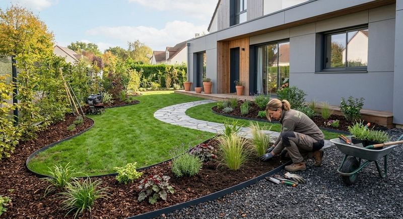
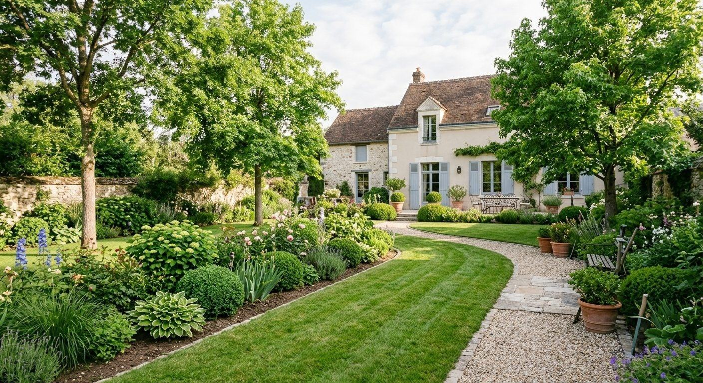
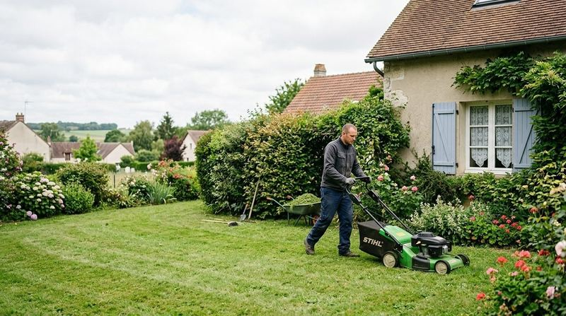
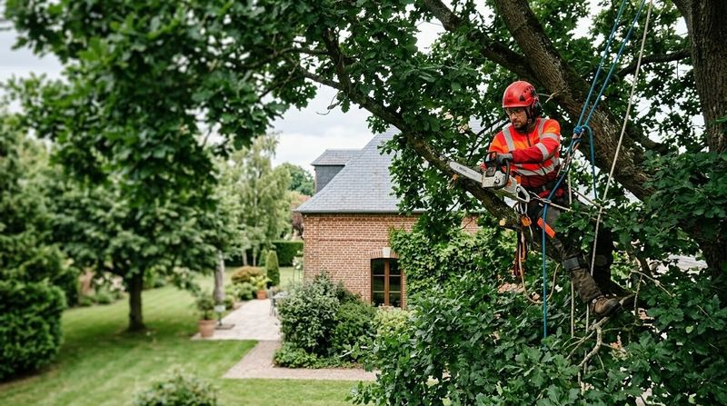
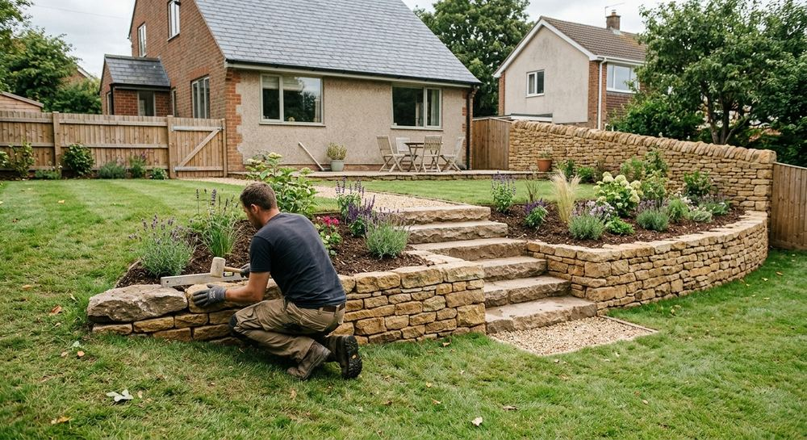
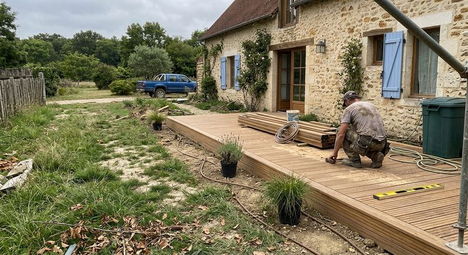
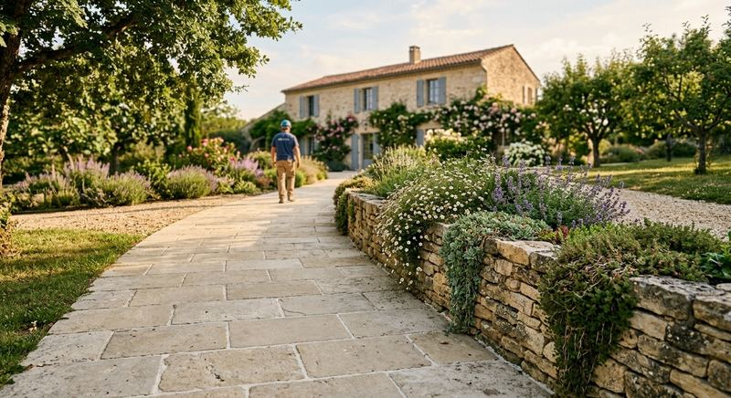
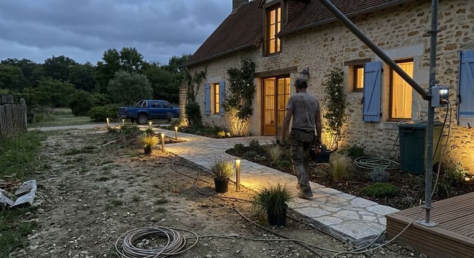
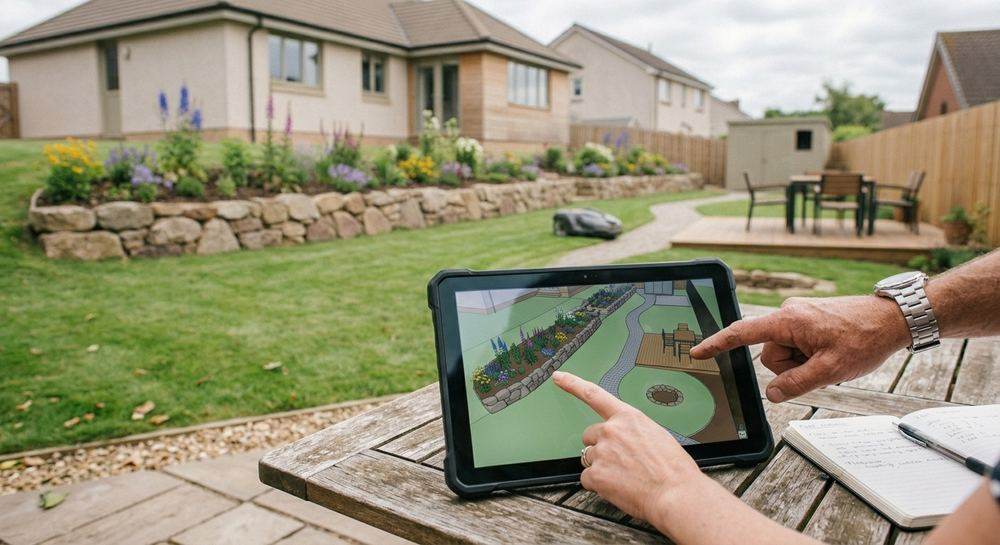
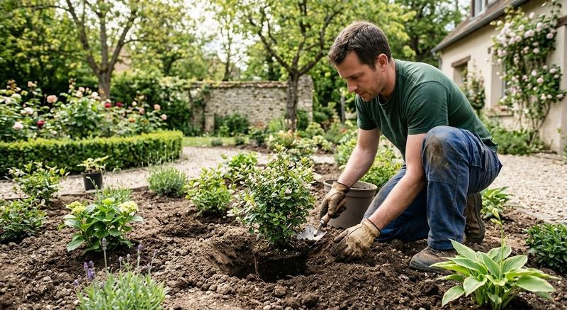

Concevoir
Création de jardins
Nous dessinons votre jardin avec vous, puis nous le réalisons.
- Conception du projet
- Réalisation des aménagements

ALL GARDEN conçoit, réalise et entretient les parcs et jardins des particuliers comme des structures publiques, avec une équipe qui s'occupe aussi de vos arbres.
Un seul interlocuteur pour imaginer l'espace, le réaliser, l'entretenir et s'occuper des arbres.

Nous dessinons votre jardin avec vous, puis nous le réalisons.

Un jardin soigné toute l'année, chez les particuliers comme pour le public.

Intervention sur les arbres, avec un regard sur leur état de santé.
Murets, escaliers de pierre, limites de propriété : la structure du jardin se construit aussi avec la pierre et la clôture.
Chaque ouvrage est pensé avec le reste du jardin pour que l'ensemble tienne visuellement.




ALL GARDEN est une SARL créée en 2012, installée à Marcoussis dans l'Essonne. Elle conçoit, réalise et entretient des parcs et jardins privés ou publics, et intervient sur les arbres : élagage, abattage et état sanitaire.
Vous avez un jardin à imaginer, à reprendre ou à entretenir ? Racontez-nous votre projet par téléphone.

Le plus simple est d'appeler : présentez votre projet à l'équipe d'ALL GARDEN.
06 10 93 16 46